What shape should the reference be — and what wording gets the whole outfit?
The shipped extraction prompt says “the garment”, singular, and
the model takes it literally: pieces go missing, footwear and jewellery almost always.
Eight prompts were tried. Each fixed something and broke something else, and the sequence
of breakages is the useful part. Amber outline = past a drift flag. Green = clean on
every probe. Click any image for full size.
1 · Every prompt tried, and what each one broke
The failures are the argument, so they are all here. Prompts of record: EXTRACT in v3/build/run_v30.py.
QXp1isolated on white28 references
Return only the clothing from this photo, isolated on a plain white background. Remove the person entirely - no face, no skin, no hair, no background. Preserve the garment's exact colour, pattern and shape.
fixed the shipped extraction
broke says “the garment”, singular — drops pieces
QFp2flat lay28 references
Extract the garment as a flat product photograph on pure white. Keep every detail of the fabric - the exact colour, print, texture and cut. Do not redesign, restyle or complete anything that is not visible.
fixed asks for a flat product photograph
broke same singular noun, plus “do not complete anything that is not visible”. g018 returns a blazer with no trousers
QMp3ghost mannequin28 references
Show this outfit as a ghost mannequin product shot on white: the clothing keeps its shape and drape as if worn, but the person is invisible. Identical colour and pattern.
fixed says “outfit” — drops least of the three originals
broke V2 found it read as “make it pale and simple”; footwear still dropped
QFAp4flat, slots named28 references
Lay out the complete outfit this person is wearing as a flat product photograph on pure white. Include every piece: the top, any outer layer or jacket, the lower garment, the footwear, and every accessory - bag, belt, hat, scarf, eyewear and jewellery. Arrange the pieces side by side so that each one is separate and fully visible, none overlapping another. Reproduce each piece's exact colour, print, texture and cut. Every piece in the photograph must appear in the layout.
fixeddropping fixed — every piece present
broke naming the slots made the model generate them: hats, bags and scarves that are in no photograph
QMAp5mannequin, slots named28 references
Show this person's complete outfit on a mannequin against pure white. Every layer is worn exactly as it is worn in the photograph, keeping its shape and drape, and the person themself is gone - no face, no skin, no hair. Include the footwear and every accessory - bag, belt, hat, scarf, eyewear and jewellery - worn or placed as they are in the photograph. Reproduce each piece's exact colour, print, texture and cut. Every piece in the photograph must appear on the mannequin.
fixeddropping fixed
broke same invention — every mannequin wears a hat
QFBp6flat, no slot list4 references
Lay out the outfit this person is wearing as a flat product photograph on pure white. Show every piece they are actually wearing, from what is on their head to what is on their feet, arranged side by side so each piece is separate and fully visible. Copy each piece exactly as it appears - the same colour, print, texture and cut. The layout contains only what the person is wearing and nothing else: if they are not wearing a hat, there is no hat in the layout.
fixedinvention fixed
broke “from what is on their head to what is on their feet” read as include the head — floating wigs and faces
QMBp7mannequin, no slot list28 references
Show this person's outfit on a mannequin against pure white. The mannequin wears every piece the person is actually wearing, from head to feet, exactly as they wear it, keeping its shape and drape - and the person themself is gone, no face, no skin, no hair. Copy each piece exactly - the same colour, print, texture and cut. The mannequin wears only what the person is wearing and nothing else: if they are not carrying a bag, there is no bag.
fixedinvention fixed, head gone, full outfit
broke — nothing yet. The shape v3.1 is built on
QFCp8flat, footwear named4 references
Lay out the outfit this person is wearing as a flat product photograph on pure white. Show every garment they are wearing together with their footwear, arranged side by side so each piece is separate and fully visible. Copy each piece exactly as it appears - the same colour, print, texture and cut. The layout contains clothing only: no person, no head, no hair, no skin, and nothing the person is not wearing.
fixedhead fixed
broke “side by side” read as show variants — pieces duplicated
2 · The four probe references, through every prompt
Four multi-piece outfits — a tank with shorts and sneakers, a sweater with a skirt and shoes, a suit with shoes, and a blazer with trousers. Read left to right: pieces appear, then invented accessories appear, then heads appear, then duplicates appear.
dualuse_woman_top_denim_skirt_nonceleb
raw photograph
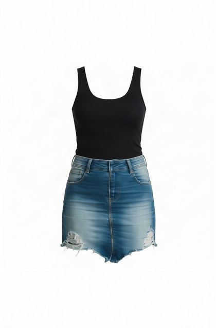
QX · p1
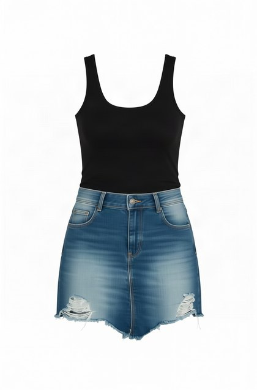
QF · p2
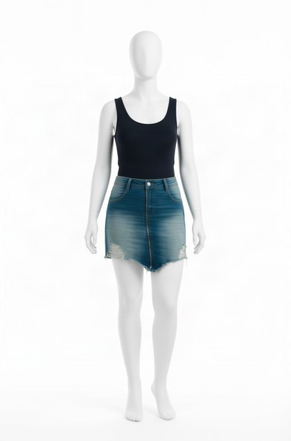
QM · p3
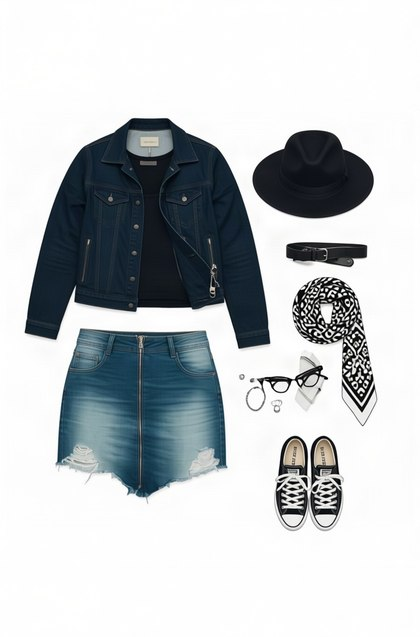
QFA · p4
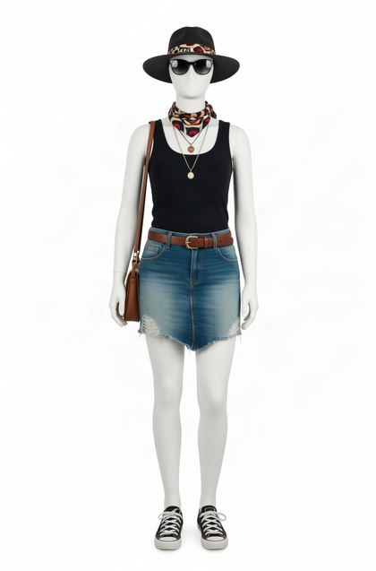
QMA · p5
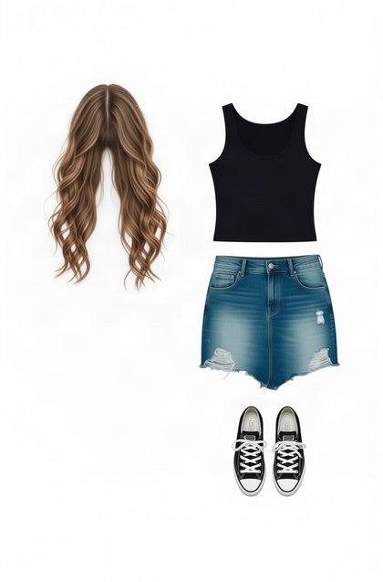
QFB · p6
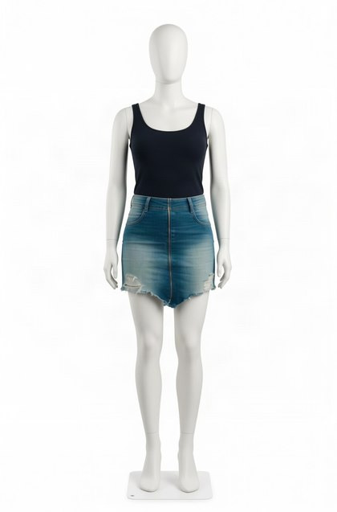
QMB · p7
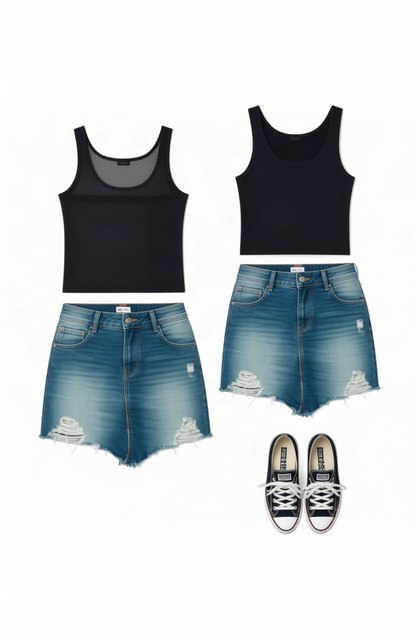
QFC · p8
g024
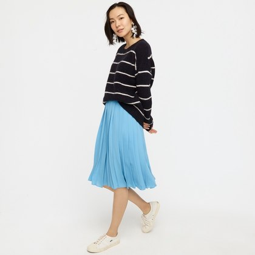
raw photograph
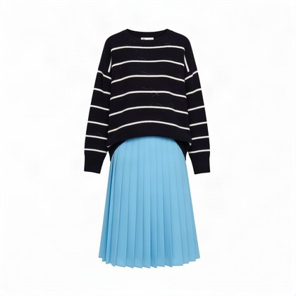
QX · p1
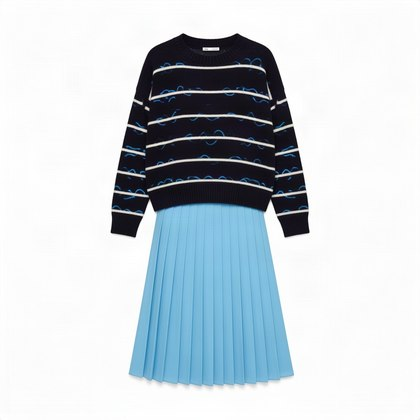
QF · p2
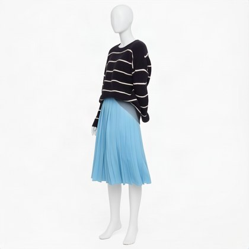
QM · p3
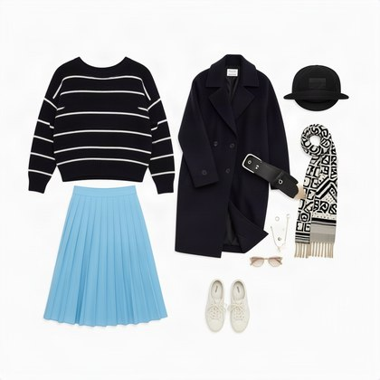
QFA · p4
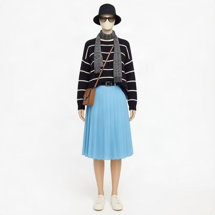
QMA · p5
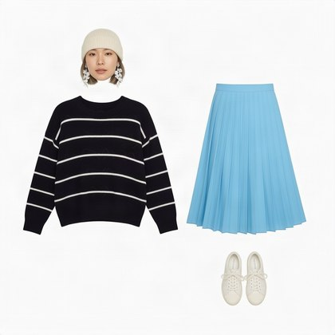
QFB · p6
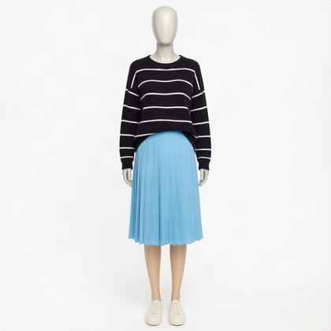
QMB · p7
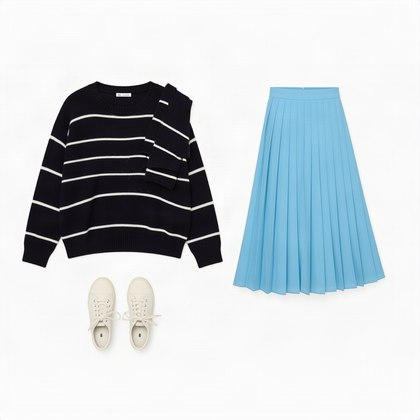
QFC · p8
dualuse_man_black_suit_studio_nonceleb
raw photograph
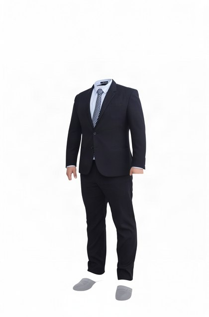
QX · p1
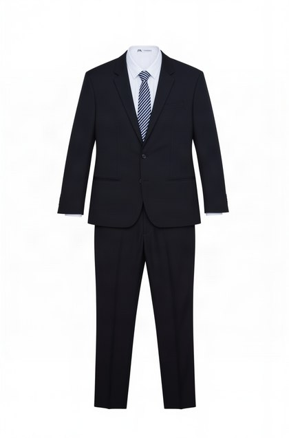
QF · p2
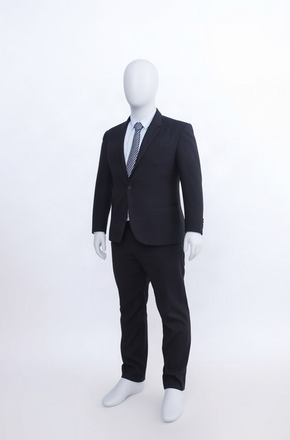
QM · p3
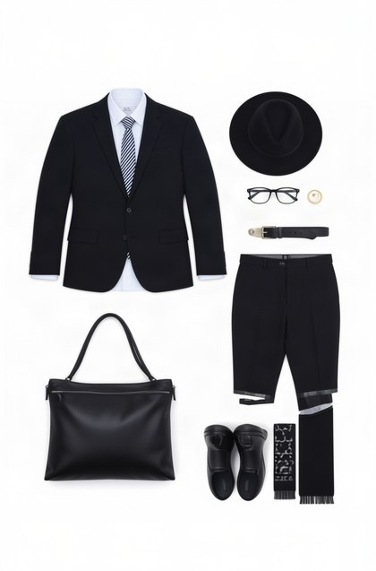
QFA · p4QMA · p5
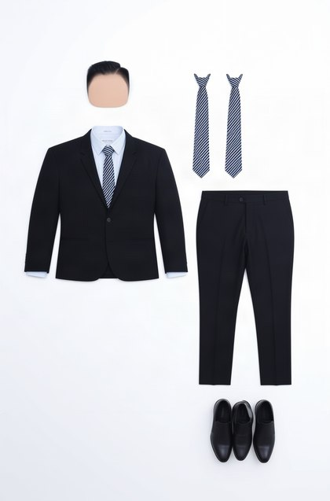
QFB · p6
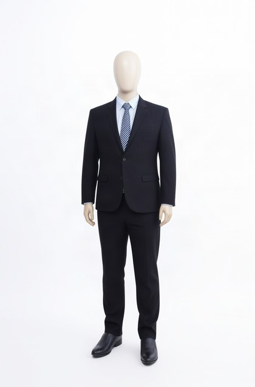
QMB · p7
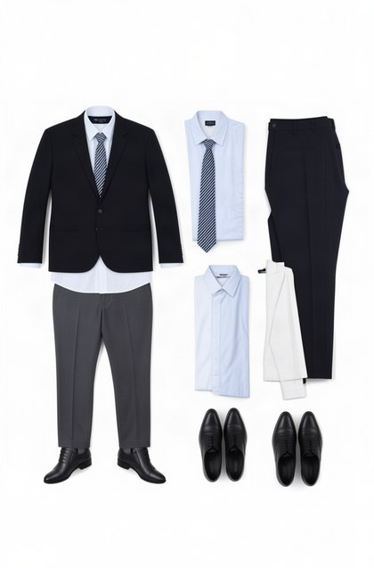
QFC · p8
g018
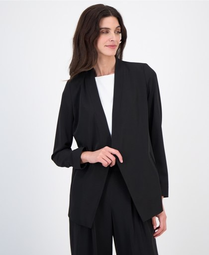
raw photograph
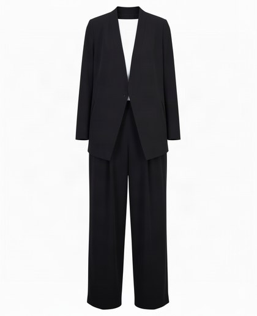
QX · p1
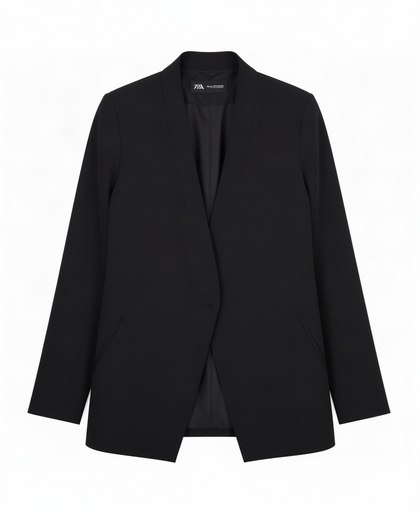
QF · p2
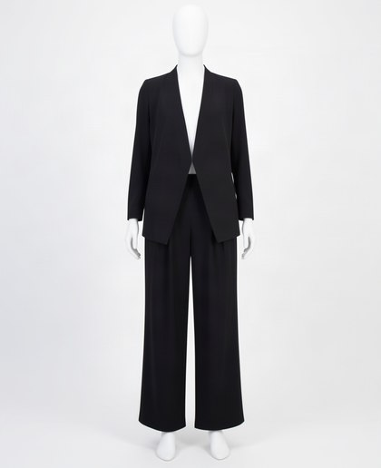
QM · p3QFA · p4
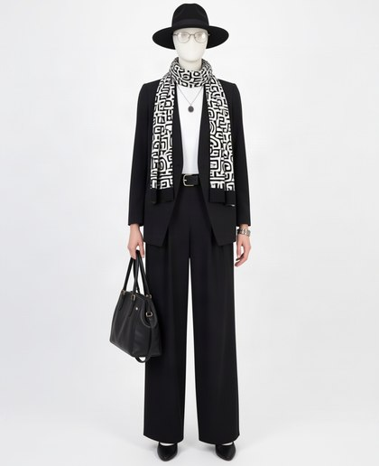
QMA · p5
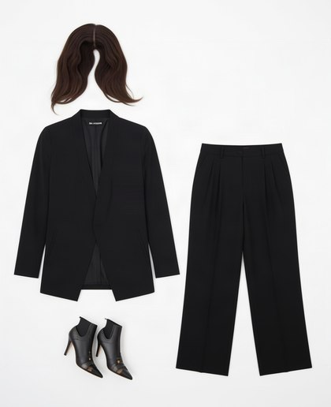
QFB · p6
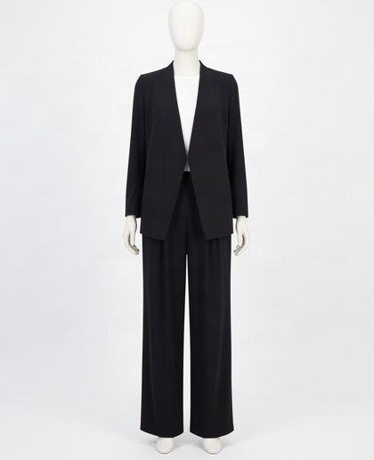
QMB · p7
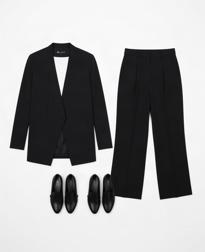
QFC · p8
3 · All 28 references — the five shapes run over the whole set
shape
|dL|
|dC|
dHue
edge kept
flagged
QX · isolated on white
27.5
4.2
23°
×0.67
21/28
QF · flat lay
27.2
4.4
26°
×0.61
21/28
QM · ghost mannequin
83.4
8.6
31°
×0.57
24/28
QFA · flat, slots named
41.1
6.0
31°
×1.04
23/28
QMA · mannequin, slots named
70.5
7.5
34°
×1.25
26/28
QMB · mannequin, no slot list
69.4
8.3
34°
×0.79
23/28
Drift is measured against the subtractive crop —
the same garment on the same white ground, arrived at by cutting instead of regenerating.
The raw photograph was tried first and is the wrong baseline: the statistics run
over non-white pixels, so against a raw frame they compare the garment to the entire
scene and report a lightness drift near 90 for every shape. Recorded because that wrong
number is plausible enough to be quoted.
One caveat on the mannequin rows. Their lightness figure is inflated
by the mannequin itself: it renders as a light grey form, which is not white enough to be
excluded and is therefore counted as garment. V2's finding that the mannequin prompt
“makes it pale and simple” may be measuring the mannequin rather than the
clothing. Do not quote the mannequin dL until it is re-measured with the form masked
out.